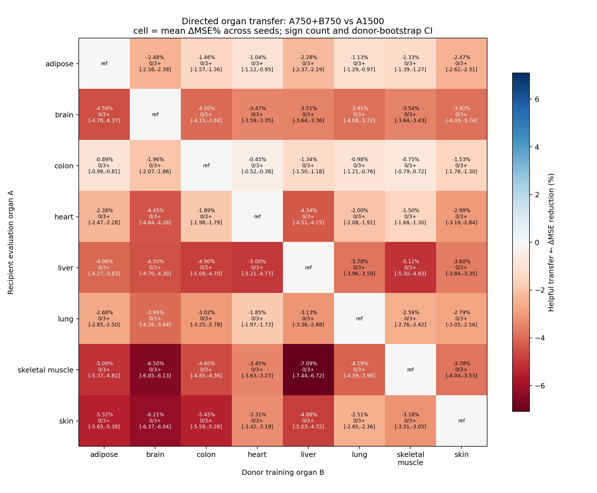

Organ specialists improve reconstruction—but not yet state prediction
Like a hospital, we asked whether biological specialists outperform one general practitioner, whether the front desk can choose automatically, and when specialists should share what they learn.
Specialists reduce hidden-gene prediction error by 3.6–3.8%
One general model was compared with organ-specific experts on independent human RNA studies. Lower error is better.
What this establishes
Specialization helped whether the correct organ was supplied or selected automatically. Blind soft routing retained ≈97% of the revealed-organ gain.
Evidence boundary: post-access QC-amended external evaluation; six prespecified low-coverage samples were excluded, with no replacements. A new untouched cohort is required for pristine confirmation.
Specialists win at every tested budget—but the gain is not monotonic
Robust specialization
Every prespecified budget×seed run favored the organ adapters. Every donor-bootstrap interval stayed above zero.
No monotonic claim: log-budget slopes were +0.098, +0.170, and −0.784 across seeds. The advantage persisted; its magnitude did not scale consistently.
Evidence boundary: donor-disjoint GTEx development with the trunk frozen. Samples, updates, and active adapter width are matched; total stored parameters are not. This is not an end-to-end scaling law or external confirmation.
Naive sharing produced no reproducibly helpful rule

Rows are recipient organs; columns are donor organs. This substitution test removed half of the recipient's own training exposure.
Compute-matched substitution
Every tested donor substitution was negative across all seeds—but the design also removed recipient data.
Additive follow-up
Conclusion: this protocol does not support a general organ-to-organ data-sharing rule.
Extra biological labels did not beat a matched capacity control
Tissue-site adapter versus generic adapter
The tissue-site model looked much better than the protected base, but an equally large generic adapter did slightly better in every seed.
Values are tissue-site minus parameter-matched generic performance; negative means the generic adapter won.
Hallmark pathways
Strong aggregate signal, but failed the prespecified skeletal-muscle safety gate.
Age
Failed donor-bootstrap stability in two of three seeds.
Sex
Failed donor-bootstrap stability in every seed.
Decision
Keep the validated K8 organ model plus pooled fallback. Add no secondary expert axis.
Why the matched control matters: improvement from more parameters is not evidence that the biological division itself helped.
The frozen outputs lose state signal; diagnostics narrow the bottleneck
The only powered organ is near ceiling
Skeletal-muscle AUROC. Raw expression leaves almost no improvement headroom.
Low-label probes make the loss visible
At 10% labels: raw/PCA 0.7313/0.7203 versus learned 0.5074–0.5339. Every learned-minus-raw interval was negative.
Choose a benchmark with headroom—then test state supervision directly
Find a controlled human task
At least 10 two-class studies, 200 samples, 80 per class, and labels varying within study.
Reject ceiling and floor tasks
The primary-organ raw AUROC must fall between 0.60 and 0.90, with study-bootstrap evidence above chance.
Test explicit state supervision
Compare linear and nonlinear frozen-feature readouts with raw, PCA, matched pooling, generic capacity, and SOTA models.
In parallel: preregister a completely untouched reconstruction cohort to confirm the result the model was originally trained to achieve.
Evidence labels and boundaries
| Result | Supported statement | Boundary |
|---|---|---|
| ARCHS4 reconstruction | Organ specialization lowers aggregate external MSE in all seeds. | Post-access QC-amended; not pristine confirmation. |
| GTEx donor-budget curve | Organ adapters beat matched pooling at all five budgets in every seed. | Frozen trunk; not total-parameter matched; no robust monotonic slope. |
| Directed transfer | No reproducibly helpful rule under tested substitution/addition protocols. | Does not rule out all hierarchical or protected sharing. |
| Secondary axes | No tested axis survived all matched controls and safety gates. | Does not prove organ is the only biological structure. |
| OSDR downstream | Frozen outputs are less linearly useful than raw/PCA for this task. | Accessed cross-species development cohort; not information-theoretic absence. |
The future decision gate
Q-A · deployment
Does a blind organ-aware representation beat raw expression, fold-fit PCA, BulkRNABert, and BulkFormer?
Q-B · specialization
Does the same organ-aware model beat a parameter- and tuning-matched pooled model?
No outcome-driven rescue: no best seed, threshold relaxation, replacement samples, reused confirmation cohorts, or ARCHS4 development access.